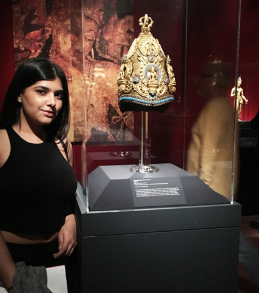

The Gallery Exhibit Vajra Masters: Ritual Art of Nepal" was displayed at The Metropolitan Museum of Art. The Gallery exhibited five crowns evoking the five transcendent Buddha's of awakened wisdom, configured as a mandala, creating a cosmic field of center. These were empowering symbols of ritual authority that are worn exclusively by the hereditary caste of Vajachariyas, performing priestly functions, analogous to the privileges of Brahmans in Hinduism.
The iconography, and stylistic evolution of these remarkable objects was an eye-catching moment. I found myself coming back to one of the Vajachariya Priest's Crown originating back to 15th-16th Century, in which there was a lavish use of mercury gliding to convey the appearance of a golden object, enhanced with settings of turquoise and rock crystal, embellished with numerous, varied semiprecious stones such as Lapis Lazuli, Turquoise, which was used create a powerful triad for prosperity and protection.
I thought this was an interesting piece as it took me back to my cultural heritage background in Jaipur, India. There were elements like the crowned Buddha, that were worn in order to represent status and class rather than comfort. I also found the spacial design of this exhibit interresting as there was a separate room allocated to these artifacts, symbolizing a certain power held in these objects and the privacy the space evoked through its atmosphere. Having seen red associated with power, status and royalty in India, added an additional view on the surrounding of the chosen exhibit.